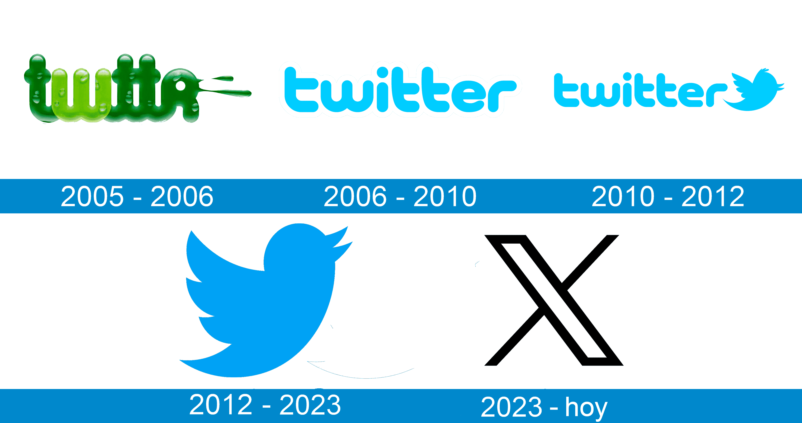

Continuara...
Regresar al menúTwitter, recientemente renombrado como "X," es una de las plataformas de redes sociales más influyentes del mundo, conocida por su formato de mensajes cortos o "tweets." Desde su lanzamiento en 2006, ha sido un espacio dinámico para la comunicación en tiempo real, donde personas, empresas, organizaciones y figuras públicas comparten noticias, ideas, opiniones, memes y momentos importantes con una audiencia global. A lo largo de los años, Twitter se ha convertido en un lugar para movimientos sociales, campañas de concienciación, debates globales y tendencias culturales. Los hashtags (#) son una característica icónica de la plataforma, permitiendo a los usuarios seguir conversaciones sobre temas específicos, desde eventos deportivos hasta causas sociales. A pesar de su transformación reciente bajo el nuevo nombre, sigue siendo una herramienta poderosa para conectar a personas de todo el mundo, ofreciendo un espacio para la creatividad, el humor, la protesta y la solidaridad.
Orígenes y Crecimiento
Twitter fue creado por Jack Dorsey, Noah Glass, Biz Stone, y Evan Williams, y se lanzó oficialmente en marzo de 2006. La idea original era simple: crear una plataforma donde la gente pudiera compartir actualizaciones cortas, de 140 caracteres (luego ampliados a 280) sobre lo que estaba haciendo. Desde entonces, se ha convertido en una red de información global en tiempo real con más de 330 millones de usuarios activos mensuales.
Impacto Actual
Twitter ha jugado un papel fundamental en muchos eventos históricos y movimientos sociales. Desde la Primavera Árabe hasta el movimiento #BlackLivesMatter, la plataforma ha permitido a personas de todo el mundo conectarse, organizarse y amplificar sus voces. También es una fuente crucial de noticias de última hora; periodistas, expertos y ciudadanos a menudo usan Twitter para reportar eventos en tiempo real, mucho antes de que aparezcan en los medios tradicionales.
Comunidad y Creatividad
Twitter es un lugar vibrante y lleno de creatividad. Desde los hilos (o "threads") que permiten contar historias en varias publicaciones, hasta los memes virales que se propagan en cuestión de minutos, la plataforma es un espacio para la autoexpresión. Además, es conocido por su ingenio y humor: los tweets ingeniosos de usuarios de todas partes del mundo a menudo se vuelven virales, generando risas y conversaciones.
Innvación Constante
A lo largo de los años, Twitter ha introducido diversas características para mejorar la experiencia del usuario:
Spaces: una herramienta de audio en vivo para discusiones en grupo, similar a Clubhouse.
Communities: una función que permite a los usuarios unirse a grupos basados en intereses específicos.
Super Follows: que permite a los creadores de contenido ganar dinero a través de sus suscriptores.
Incluso después de su cambio de nombre a "X", la plataforma sigue experimentando y adaptándose a las nuevas tendencias tecnológicas, como la inteligencia artificial y las criptomonedas.
Un Espacio para Todos
Twitter se destaca por ser un lugar donde cualquiera, desde un individuo anónimo hasta líderes mundiales y celebridades, puede tener voz. Este espíritu democrático permite conversaciones abiertas, debates públicos y un intercambio de ideas que puede ser tanto inspirador como desafiante.
resumen, Twitter, ahora "X," sigue siendo una plataforma que evoluciona constantemente, buscando maneras de conectar a la gente y mantenerse relevante en un mundo digital en rápida transformación.
|  |